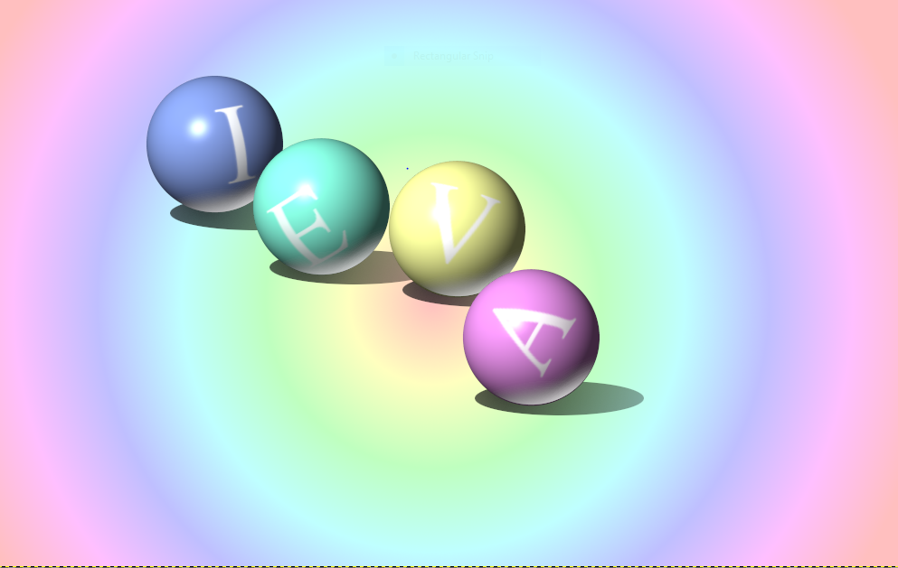

GIMP darbi
Mums bija jāizveido vairākas bildes gimp vidē, apakšā pievienoju divas no tām bildēm, kuras tika novērtētas ar ballēm.

Bildi veidoju pēc parauga, lietojot vairākus GIMP pieejamos rīkus.

Apraksts otrajam darbam